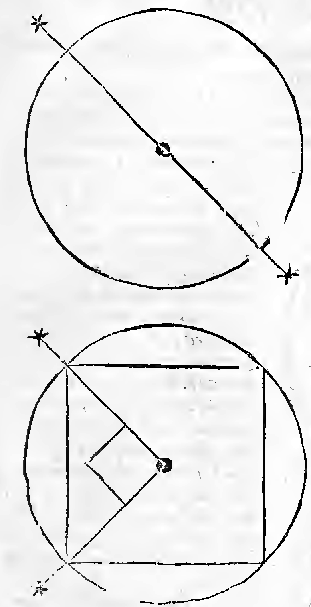
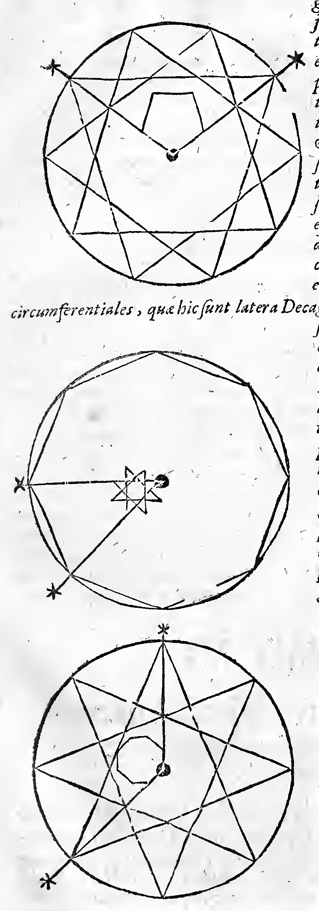

Chapter V: Causes, Congruence, and Ranking of Efficacious Planetary Aspects¶
CHAPTER V.
On the causes of efficacious Configurations, and on their Number and order of degrees.
DEFINITION I.
The term Configuration is taken for that angle of two rays, each descending from its own Planet, at which angle the rays meet here on Earth (which has the ratio of a point); or, what comes to the same thing, it is taken for the arc of a great circle described in the Zodiac, which arc is the measure of the said angle, or which arc two Planets seem to us Earth-dwellers to bound and as it were cut off by the interposition of their bodies.
It is to be noted first concerning the name that Ptolemy in the Tetrabiblos, in the Almagest, and in the Harmonics calls them Σχηματισμοὺς, which the Arabs translated as Aspects, as if Schema were the same as countenance, face; which our German idiom also has, which usually calls the face das Angesicht / Aspect, and the masks of actors held before the face, Gesichter / which the Italians call Mascaras. Yet there is also found the word προσβλέψεις, which we not only translate from the Arabic as Aspects, but good Authors in Latin are wont to call Intuitus (Lookings-at), and Beholding signs. In this sense, however, the word applies not so much to the planets as to the signs or Dodecatemoria of the Zodiac; which, since they have lengths, can be turned toward one another with those concave sides according to more and less. For contiguous signs cannot look upon one another, since their faces are turned not toward each other, but side by side toward the same quarter.
Next, note that at the time when two Planets make an Angle on earth, at the same time in other places of the world they make other angles; but nowhere so great ones as on the arc of a circle drawn through their bodies and that of the earth, or revolved around the line that connects their bodies as around an axis. Outside these places their radiations meet at far different angles, whether those too be Harmonic or incongruous, as almost throughout the whole remaining world. Above all, note that in neither of the planetary bodies is any angle constituted. For two rays are required for an angle: but every ray is outside the body, none in the body itself. Which is therefore to be noted, because the forming of an angle on earth is followed by an effect on earth also, from which at the time of Aspects the matter of rains and of the other meteors breathes forth: so that we may dispute about the seat of the cause moving meteors, that it is not in one Planet or the other, nor in any other empty place of the world, but in the earth itself.
Thirdly, the mention was not added in vain that the Earth has the ratio of a point: for from this it follows that, even though living beings on earth are innumerable, and rays from any Planet onto them and the remaining points of the earth are infinite, nevertheless, to sense, the angle of rays coming from two Planets at the same time is the same through all points of the earth, whether in the center, or on the surface, or in the caverns of mountains: all those aspects, though infinite in number, are held for one aspect: for all are equal to one another to sense.
f. 0224 · p. 134DEFINITION II.
A configuration is called efficacious when the rays of two Planets make such an angle as is fit to stimulate sublunary Nature, and the lower faculties of Living things, so that each becomes more active about its own work, at the time of the configuration.
Efficacy is attributed to a configuration, which formally is a Being of reason—not an immediate efficacy upon the thing itself, as though rain and the like fell from heaven itself, namely from the configured planets, which is a foolish persuasion of the vulgar—but mediate and objective. For just as objects move the senses, sound the hearing not the eyes, and color the sight not the hearing: so here too a certain quality of this Relation, which is called configuration, moves not the senses of the body, but the animal faculty, capable of Reason by instinct without discourse. Configuration therefore does this not by its own power, but by the power of the Soul, which is said to suffer, though in truth it rather acts itself upon itself. Afterward the soul or sublunary Nature, thus moved or stimulated by the aspect, and put in mind of itself, rouses itself up to draw forth from the bowels of the earth the matter of every kind of tempest. If there were no Soul in the Earth, which we call sublunary Nature, the planets themselves could do nothing upon the Earth either by themselves or by an opportune aspect. For it is absurd to think and like a poetic jest and play, that from the harmonic coupling of two rays, as from the intercourse of male and female, vapor is conceived, the matter of wind or rain: as though indeed, just as seed is of the substance of the parents, so the moisture and the rest that exhale from the earth were of the substance either of Harmony, which is a relation, or of the Angle, which is a qualitative quantity, or even of Light itself, which is a quality, and by no means a substance. But just as we say that from nothing, nothing comes to be: so also from something immaterial, naturally, nothing material can be drawn forth. See more in Chapter VII.
Axiom I.
The arc of the Zodiac circle which the side of a congruent and knowable figure or star cuts off measures the angle of an efficacious Configuration.
Axiom II.
The angle of a knowable and congruent figure or star is the modulus of the angle of an efficacious Configuration.
On two Axioms the whole business rests; which I have made two for this reason, because there are two probable ways by which sublunary Souls and Natures can come to knowledge of the Configurations which exist at any time. For either they perceive that figure whose side cuts off from the Zodiac circle the arc that is the measure of the Configuration or of the ray-angle; or that figure whose element becomes that very angle of the configuration. What difference there is between these figures, and what kinship in turn, is plain to the eye from these Diagrams following one another in order from this point.
f. 0225 · p. 135

[In the margin: Figure I.] For the Diagrams are reciprocal (ἀντιπεπονθότα) in pairs: first the diameter to itself, whether it bisects the circle, drawn through the center, or touches it, when two rays make two right angles or rather a null angle in place of an angle, ranged in one straight line. The same is to be thought of the Conjunction ☌ or ☍ of the Planets, which is improperly called a configuration. For if two Planets should be under the same point of the Zodiac, then at the center the angle is null, at the circumference infinite, and the sides of the figure are points: the circle, that is to say, is as it were an Infinitangular Figure. This configuration had no need of ocular representation.
[In the margin: Figure II.] Next, the Tetragon too is reciprocal (ἀντιπέπονθε) to itself, because the angle which two sides form at the circumference is equal to the angle at the center which one side subtends. From this, the Trigon to the Hexagon, the Pentagon to the Five-angled star, the Octagon to the Eight-angled star, the Decagon to the Ten-angled Star, the Dodecagon to the Twelve-angled Star are reciprocal (ἀντιπεπόνθασιν); so that if all the angles of one of the partners are inscribed in the circumference, its side subtends one angle of the remaining partner placed at the center.
Now the centers of all the circles shadow forth the Earth, situated as it were in the middle; the circles themselves represent either the Zodiac, imagined from the earth, or any other circle subordinate to the Zodiac, imagined for the sake of measuring angles: which sort of circles, potentially, are the souls themselves which are moved by aspects, circles, that is, abstracted as it were from quantity itself, and reduced into the narrow bounds of a qualitative point, and one capable of directions.
Moreover, I placed two radiating stars outside this circle, one higher than the other, so that by ocular representation I might warn that it makes no difference to a Configuration on earth whether a Planet is high or low in heaven; and that one can be many times higher than the other, while the same Configuration remains on Earth.
Furthermore, as to the fact that in the first axiom the word congruent comes first, and in the second the word knowable, this was done not by chance but deliberately. For that any Aspect is efficacious, both figures are in cause, both that which is inscribed in the circumference, and that of which one angle is formed by rays at the center: each both on account of Knowability and on account of Congruence, yet not equally. All which things need a somewhat more prolix explanation; and why this is so thorny, there is a single cause: so that the number of Aspects may by philosophical reasons be diminished, or at least
f. 0226 · p. 136distinguished into certain degrees. For if in addition to the customary eight I had wished to admit four more without any discrimination, this disputation could have done without several of the following propositions as it were, occupied as they are only in comparison.
Proposition I.
Greater is the kinship of Radiations with the Circle and its arcs than was that of Consonances.
Although the foundations of this were laid beforehand in Book III, so that it might now deservedly be carried over into Book IV as an Axiom, yet it is proved thus. 1. Consonances are of sounds, sounds consist in motions; and their highnesses and lownesses, by which Consonances are expressed, arise from swiftness and slowness of motions, by the demonstrations of Book III. Now swift and slow sounds are elicited from stretched things struck, not only if the tension be circular, but also, and much more, if it be rectilinear. [In the margin: Figure III.] Consonances therefore do not immediately regard the circle and its arcs because of its circular figure, but because of the length of the parts, namely of their mutual proportion; and they have what they have from the circle even then, if the circle has been destroyed and stretched out into a straight line. Aspects on the contrary, by Definition I, are angles which the circle measures with its arcs, not otherwise than if it remains what it is said to be, namely insofar as it both has a circular figure and retains it whole.
[In the margin: Figure IV.] 2. Consonances were not all propagated with equal nearness from the circle and its parts; for some referred their origin to parts of the circle insofar as something befell them not as parts of a circle, but as straight lines, namely the same division as to the whole circle, as was shown in Book III. The contrary holds in Aspects: for the measure of that which corresponds only to a circle can in no way have a respect of straightness.
Proposition II.
Greater is the kinship of Radiations with
f. 0227 · p. 137Regular figures than was that of Consonances.
It is proved first from the circumferential figure. For where the circle is whole, there also the regular figure is whole: but the circle is more whole in measuring the angles of radiations, by I; therefore the figure also can be considered more as whole in respect of radiations. [In the margin: Figure V.] On the contrary, in Consonances, as the circle and its parts could be stretched out into a straight line while preserving consonances, so too all the sides of a figure could be stretched out into one and the same straight line, and make a Consonance with one rectilinear side of the figure. In this way, however, just as the circle, so also the rectilinear figure loses its figuration, so that it is no longer a figure.
It is proved secondly from the central figure. Angles are the elements of figures; now two rays make an angle at the center, which, repeated a certain number of times, completes the figure, as appears from these diagrams. [In the margin: Figure VI.] This, however, did not happen in the origin of Consonances; for there was no respect of an angle at the center there. Figures are therefore more familiar to Aspects than to Consonances.
Proposition III.
The Congruence of figures has greater power in establishing efficacious Configurations than in Consonances.
Many arguments for this matter lie ready to hand. 1. Congruence is a property of a figure insofar as the figure is whole and has a species: now a figure insofar as it has this species as a whole first is itself by itself more akin to configurations than to Consonances, by Prop. II; next it divides the circle harmonically as a whole, and the circle too is even more akin to configurations than to consonances, by Prop. I. Wherefore on both accounts, both on the private title of the figure and on the common title of the figure and the circle, the force of Congruence of figures is also greater in configurations than in consonances.
2. From the number of figures. For we have assumed this, by the Axioms laid down beforehand, that figures are efficacious through their properties. Where therefore the Number
f. 0228 · p. 138of things to be effected corresponds more, there is the greater kinship of cause with effect, at least probably. Now just as Congruent figures are few, so also Aspects are few, as experience testifies: for unless they were few, great would be their confusion, great their frequency, so that they could not be observed singly apart on their own days: but they can be observed, therefore they are not infinite in number; [In the margin: Figure VII.] on the contrary, consonances can be infinite by the augmentation of intervals through the Octave, as knowable figures are infinite.
3. From the Essence of the Terms in which the proportions consist on this side and that. Motions, of which Sounds are an affection, are considered in BECOMING, and insofar as they occupy time; Radiations more in momentary BEING. For just as at this moment there is some body, so also at this moment there is some radiation: but of Motion, what has passed by is no more, what follows is not yet, in a moment it is nothing. [In the margin: Figure VIII.] Now Congruence seems rather to belong to things that ARE than to things that BECOME: for the sides or walls of a house are congruent so that the house may be, not so that it may merely and perpetually indeed be in the building. 4. From the kinship of congruence as cause with configurations. For they are angles: but congruence too resides in figures on account of angles.
Hitherto Consonances and Configurations were opposed to each other: in what follows another opposition will be made, within configurations alone, of Congruence and Knowability.
Proposition IV.
For the Efficacy of configurations, the Congruence of figures has greater power than Knowability.
It is proved from the condition of the sublunary Soul, and also of the faculties of the human soul which perceive aspects. For all these are lower than the discursive faculty and the Intellect, and more akin to the sensitive faculty and that set over sensible works: nay even its instinct, as we said in Ch. III, is by so much duller than the human instinct as the body of the Earth is grosser than the body of man. Moreover, Congruence is something posterior to Knowability, and as it were stretched forth outward into some
f. 0229 · p. 139work, which has the Idea of sensible works. It is therefore reasonable to believe that these animal faculties are moved and affected by Congruence rather than by the Knowability of figures.
Congruity and Science were being opposed to each other in the same kind of Configurations. Now two figures will be opposed to each other, first on account of Congruence alone, afterward on account of Configurations.
Proposition V.
Congruence is a property more of the Circumferential figure than of the Central.
For it has a stronger place in that figure which can become whole, by reason of the place from which it is named; because congruence belongs to whole figures, as appears from Book II. But of the Central figure no more than one angle can stand at the center, by def. 1. At the circumference, however, the Circumferential figure can be whole: therefore.
Proposition VI.
Of the two figures which each Aspect claims for itself, the Circumferential is stronger than the Central.
For Congruence is stronger in this business than Knowability, by IV. But Congruence is stronger in the circumferential figure, by V. Wherefore in whatever that which prevails is more present, it makes that very thing also prevail, namely the circumferential figure. [In the margin: Figure IX.]
The same is also proved thus from the inmost properties of the Soul touched upon in Ch. III. For since it is the Soul that procures for the Harmonies of Configurations their formal Being, surely by whatever distinction the soul is either a circle or a point, the center of a circle, by that same distinction will the Circumferential and Central figures also be familiar to it.
And although every Soul bears a certain Idea of a circle, one abstracted indeed not only from matter but also in some degree from magnitude, as was said in Ch. III, and therefore circle and center almost coincide here, and it itself can be called either a potential circle or a point distinguished by directions, and thus in a certain way qualitative: [In the margin: Figure X.] yet this distinction seems worth observing, that some faculties of the soul are to be considered rather as a circle, others rather as a point. For just as a circle cannot be thought without a center, every
f. 0230 · p. 140point in turn has a region around itself for describing a circle: so in the Soul also no operation exists without an imaginative impression; every internal reception or meditation in turn is for the sake of external motion; every interior faculty of the soul is for the sake of the more exterior ones. The principal and supreme faculty of the Soul itself, called Mind, what is it if not the Center? what the Ratiocinative faculty, if not the Circle? For just as the center is within, the circle without: so Mind abides with itself, while ratiocination weaves a certain outer web; and just as the center is of the circle, so Mind is the basis, fountain, and origin of ratiocinations. Again, all this faculty of the Soul, both Intellect and Discourse, and finally even the Sensitive, are a certain Center; while the motive faculties of the Soul are a Circle: [In the margin: Figure XI.] because again as the outer circle is set round the center, so operation is outward, while cognition and meditation are perfected within; and as the circle stands to the point, so in a certain way does outward Action stand to inward Contemplation, animal motion to sensation. For the point, since it is set opposite the circumference on every side, is born fit to represent the Patient; and what else does the sensitive Soul—or here the Soul perceptive of Radiations—do in sensing and perceiving than suffer, namely because it is moved by objects?
[In the margin: Figure XII.] Also by comparing both comparisons: as the center is the same on both sides, so also in a certain way the form of cognition is the same, the principal mental one and the sensitive one, or its analogue perceptive of Radiations: neither uses discourse in itself, insofar as it is such, but knows on this side of discourse. So that this latter—I mean sublunary Nature, or even the sensitive—is a certain faint image of the Principal human Mind: just as that discourse of reason is the image of these actions or operations of the soul, each being a circle.
Insofar therefore as Souls perceive celestial radiations, and thus are as it were moved by them within themselves, let them be points to us; but insofar as in turn they move, that is, insofar as they transfer the perceived harmonies of radiations into their own works, and are stimulated by them to act, they ought to be considered as a circle.
It follows therefore that insofar as it knows Harmonies of rays, it is chiefly occupied about the central figure; whereas insofar as it operates, stirring up meteors (and like things in man), it accommodates itself to the circumferential. And indeed in an aspect, our care for efficacy is prior to the manner in which it is perceived by the operating Soul; prior therefore also is the respect of the circumferential figure than of the central.
f. 0231 · p. 141Here figure has been compared with figure in one and the same aspect; in the following twin proposition, the same figure being supposed, its Congruity will be opposed to Knowability.
Proposition VII.
In a circumferential figure Congruence excels the Knowability of the side; in a central figure conversely, the Knowability of the side excels the Congruence of the figure.
This proposition pertains to the consummation of the matter begun in Prop. III. For although Congruence is stronger in IV than in III, and demonstrability was stronger in Book III, yet this latter is not to be wholly separated from the constitution of Aspects: since no Congruence lacks its scientific determination, and indeed depends upon it, both of the side and especially of the area enclosed by the sides of the figure: for from the angles, in which resides the aptitude for congruing, the demonstration is fetched.
Now as regards this proposition itself, the contrary of it seems to be true, both in the one case and in the other. For as regards the central figure, its one angle is actually expressed through the rays; in the Circumferential no angle is expressed, but only the side after a fashion: whereas Congruence is of angles: therefore it seems it ought chiefly to be regarded in the Central. For if sublunary nature perceives the quantity of the angle which the rays of two planets form on earth, it seems also able to perceive the aptitude of that angle, which it has with others, for congruing.
That conversely in the circumferential figure the Knowability of the side ought rather to be regarded than the Congruence of the figure, seems plain thus.
For the Science by which a figure is known, as was demonstrated in the first book, consists in the equality either of the side with an expressible part of the diameter, or of the square on the side with an expressible part of the square of the diameter, or of the area of the Figure with the same; or in some other connection and determination, whether of the side, or of its square or area, to the diameter or its square. Granted therefore that sublunary Nature has a sense of the Zodiac circle, a sensible circle standing outside, which it examines against the idea of the abstract intellectual circle, which it has within itself connate or concreated: then surely it follows that in the order of nature it first senses how great an arc of the Zodiac is marked off by two planets, and how great a straight line subtends it, and of what quality it is, whether expressible in length, or only in the power of its square; or whether with some other line it makes an expressible sum of squares and an expressible rectangle, in which property the Expressibility of the area is founded: these things, I say, seem to become known to sublunary Nature first in the order of nature, because a side is prior to the figure described by the multiplication of the side; afterward at length, when the whole figure is in the Zodiac circle, its angles become plain, and their quantity, and whether they are of the congruent ones, and whether the figure concurs with all its angles to the same species of congruence, and whether the congruence is continuable. In brief, congruence is an affection of angles, knowability of sides. Where therefore the angle of the figure becomes known before the side, there the parts of Congruence seem prior and stronger than those of Knowability; where afterward, posterior. Now of a figure reaching to the center the angle becomes known first; of a figure described on the surface (for instance by two planets alone) the side becomes known first: rightly therefore does it seem to be done, if in the central figure a stronger account is taken of congruence, and in the superficial figure a stronger account of knowability.
f. 0232 · p. 142These objections, then, brought against our proposition, must be dissolved by us; and by the same labor the order of the properties, Congruence and Knowability, must be strengthened with true arguments.
First, therefore, although it is true that from a central figure one angle is formed by the rays of two Planets, it does not follow from this that the mind, perceiving the quantity of the angle, perceives prior in the order of nature the Congruence of the figure whose angle it is to be. The reason is plain, because Congruence, insofar as it belongs to one angle and some equal to it meeting in one plane place, is too general: for there are infinite forms of angles thus congruing, always so much the more numerous as the individual angles are smaller. Therefore this is not that Congruence of which we dispute in Book II, which happens not to angles separately, but to whole figures on account of their angles, nor to single figures, but to several joined together.
Accordingly, the objection is not only dissolved, but even turned back against itself; for what it had appropriated concerning the Circumferential figure, we can with equal right appropriate concerning the Central figure: namely, that the Congruence here proposed to us is posterior in it to Knowability, and therefore the role of the latter ought to be more potent than that of the former, by the adversary’s own concession. For first a figure must be made, before the whole can congrue. Now unless the side of the figure be knowable, the figure cannot be made. For although it is true that, given one angle of the figure which the rays of two planets form at the center, the number of all angles is given, and through them the aptitude of the whole figure for congruing, nor does the nature of the side enter into this demonstration: yet that one angle of the figure is not given, that is, it is not recognized as the angle of a congruous figure, except through a knowable side. First therefore (in the order of nature) the Soul knows the side, before it recognizes that a congruous angle is given to it.
But if we compare both figures here, the side or area of the central figure is indeed less given by the very act of radiation than the side of the circumferential figure: for the rays themselves always determine the latter, whereas they do not always determine the former, but only in certain figures; as in the Triangle, [In the margin: Fol. 136. Figure IV. Figure III.] because each of the sides of the circumferential angle subtends an arc equal to the intercepted one. More remote therefore is the central figure from the act of knowing than the circumferential; more remote therefore also is the notification of Congruence: whereas the objection rested upon the contrary, as though Central Congruence were nearer to cognition than Circumferential Congruence.
Furthermore, if the quantity of the angle is perceived, by what will it be perceived except by its own measure, that is, by the arc of that circle which is described from the point of the proposed angle, which is the earth?—not indeed first by the arc of that circle which is circumscribed about the central figure, passing through the earth. Therefore, in perceiving the quantity of the angle of the central figure, the Soul must put forth that potency by which it is a circle, not that by which it is a tiny point to which the angle reaches. Now by that same pattern of its circular essence it perceives also the side of the circumferential figure and its arc, and that first: only afterward, when this arc is doubled, does the arc of the smaller circle also emerge, which is circumscribed about the central figure, drawn through the center of the former; which arc serves for inscribing the central figure in a circle. For the order that is in reasoning is the same in instinct as well. Again, therefore, the path to the perception of the central figure is demonstrated to be longer, and so too to its Congruence. Thus the objection, which placed predominance in prior perception, overturns itself.
To the reasons for the other member we must reply thus: it is indeed true that in the circumferential figure also the Knowability of the side is prior to the Congruence of the whole figure, on account of the arguments stated, which hold here too. Yet it does not follow that of two things,
f. 0233 · p. 143whereof one is the cause of the other, that which is the cause must further move some third thing more strongly. For according to the capacity of the soul that is to be moved, the cause often has less force upon it than the effect; as here, the sublunary Soul, insofar as it is perceptive, is moved more by the knowability of the central figure; insofar as it is operative, more by the congruence of the circumferential figure.
[In the margin: Previously Prop. VI.] Now my own arguments for proving the proposition are these: for we have assumed that the center is a certain idea of the Theoretical mind, or intellect, and the circumference of the Practical or operative faculty: because as the center of a circle is the base and origin, so meditation is of action. Therefore the figure which extends an angle to the center, namely to the Earth where the Soul sits as perceiver of the figure, extends itself as it were for knowing and judging, since the center represents the tribunal of knowledge. Therefore in the central figure knowledge ought rather to be regarded; notwithstanding that it is procured through the circle as an instrument, as was said a little before.
On the contrary, the figure which arranges its angles in the circumference applies itself more to imitating and expressing in the work of the Soul, concurring as it were toward the idea of works. Now congruence, rather than knowability, possesses the idea of sensible works and structures, because it follows whole figures, whereas the side by which a figure is known is at most its element. Wherefore in the circumferential figure congruence is to be looked to rather than knowability.
A second argument for this second part rests upon the same consideration of the Soul. That excels, for the sake of which the rest exist. Now configurations are perceived for the sake of the work of sublunary Nature, and therefore also of the lower faculties of the human Soul; namely, they are perceived to this end, that they may be expressed in work; greater, therefore, is the dignity of the motive faculty in this business. But the knowability of the Circumferential figure serves perception, while Congruence serves operation, as hitherto: therefore the congruence of the circumferential figure also excels its own knowability.
Proposition VIII.
An arc of a circle which is constituted by an incongruous figure imparts no Efficacy to the radiations of two planets determining the arc.
For if congruence is the chief cause of Efficacy, by Prop. III, IV, and VII, when this is lacking, the cause here of lower rank, knowability, will not be sufficient. For although the latter prevails over congruence in the Central figure, by the second part of Prop. VII: yet conversely the circumferential figure is more potent than the central, by VI. And in the former congruence is more potent, by the first part of Prop. VII. Still, therefore, the congruence of the circumferential figure prevails over the knowability of the central figure.
Behold the reason why, although knowable figures are infinite, of diverse degrees indeed, nevertheless Aspects are few.
AXIOM III.
Arcs of a circle whose figures excel in more numerous and more potent degrees of congruence and knowability also receive more efficacious configurations.
f. 0234 · p. 144If the first two axioms agree with the truth, this too will do so: because that through which each thing is such, when it is intensified, that thing will also be even more such. Understand it thus: that in the circumferential figure the comparison of degrees of Congruence is prior, in the central figure that of degrees of Knowability, and finally the role of the circumferential figure is the more potent.
Proposition IX.
Efficacious configurations are those which intercept these Arcs of the Zodiac circle:
Deg. 180. Opposition ☍, from the Diameter of the circle: as in Fig. I.
Deg. 90. Square □, from the Tetragon: as in figure II.
Deg. 120. Trine △, and 60. Sextile ⚹, from the Triangle and Hexagon, as in figures III, IV.
Deg. 45. Octile or Sequadri, and 135. Trioctile or Sesquadri ⚼, from the Octagon and its Star: as in fig. V, VI.
Deg. 30. Semisextile ✳, and 150. Quincunx, from the Dodecagon and its Star: as in fig. VII, VIII.
Deg. 72. Quintile, and 108. Tridecile or Sesquintile: from the Pentagon and Decagonal Star: as in fig. IX, X.
Deg. 144. Biquintile ⛤, and 36. Semiquintile or Decile: from the Pentagonal Star and Decagon, as in figures XI, XII.
That these figures are Knowable and demonstrable was shown in Book I; that they are Congruent, in Book II. That the configurations of the arcs marked off by such figures are efficacious, this they have from Axioms I and II premised above.
Proposition X.
The first and strongest degree of Efficacy of the Aspects is that of Conjunction ☌ and Opposition ☍.
[In the margin: Usual characters. ☌] For in Conjunction two rays congrue into the same line, and descend from the same quarter; in Opposition ☍, though descending from opposite quarters, they nevertheless become parts of one continuous line. Now this is the most perfect Congruence and a certain principle of all congruence. Thus, since conjunction is represented by a point marked on the circumference of a circle, and opposition by the Diameter, these are certainly the principles, and the latter is the measure of everything in this kind of knowledge; since all knowledge of a straight line in a circle is contained in demonstrative determination through either the length or the square of the Diameter, as in the book
f. 0235 · p. 145first appeared. Therefore, by Axiom III, the principle of Efficacy is also in these Aspects.
Proposition XI.
The second degree in the Efficacy of the Aspects is that of the Square □.
For in the Square many prerogatives concur, the first of which is that the central figure is similar to the circumferential: wherefore whatever degrees it obtains in Congruence and Knowability, those are understood as it were doubled in respect of the other Aspects. For just as the Square, first after Opposition, unfolds from the thinness of a line into a certain breadth or superficial amplitude of the Tetragonal area, so the remaining Aspects depart from the identity of figures of the Square Aspect into a certain otherness of figures. Since, then, elsewhere in physical things united power is stronger, there will also be in this ideal and objective impression a greater degree of strength, where the figures distinct in place, namely one central and the other circumferential, are the same in species. [In the margin: □]
Next, as to Congruence, that in the Tetragon is most perfect and manifold, for this figure congrues with itself in solid to form the cube, which is the measure of all solidity, and congrues most simply, taking only three angles at a time: it congrues also in the plane with itself, four angles at a time: again it congrues in solid with the Triangle, Pentagon, Hexagon, Octagon, Decagon variously, to form solid figures; it congrues with all the same, and moreover with the Dodecagon and Icosigon in a measure, to pave a plane: in which property it is surpassed by no other.
Thirdly, the area of the Tetragon is expressible, which is the principle of a certain singular and eminent Congruence in the plane, so that a certain number of areas of this figure exhausts a certain number of squares of the diameter, and thus the figures congrue not only with one another in angles and sides, but in a manner, namely by their certain lines, even with the sides of the square of the diameter. In this property the Square aspect has only the Semisextile partly as a partner. See Book II.
Fourthly, neither is the degree of knowledge of the side ignoble, which is expressible in square; in which degree it excels all other figures except the Hexagon: nor yet does it yield place to the latter on that account, since Knowability is not to be compared with Congruence, as was explained above; and indeed the accumulation of prerogatives avails to increase Efficacy, by Axiom III of this book.
Proposition XII.
The third Degree of Efficacy is that of the Trine △, Sextile ⚹, and Semisextile ✳.
That I place the Trine, Sextile, and Semisextile in the same degree,
f. 0236 · p. 146is brought about not by an identity of properties, but by an equivalence. [In the margin: △] First, their principal figures render mutual services in plane congruence: for they unite both variously among themselves and with others, as with the square. Here indeed the Triangle and Hexagon excel, because each species also congrues with itself; the Hexagon excels the Triangle, because it obtains the most perfect congruence in the plane, namely with three angles alone: both excel the Dodecagon, because they also congrue in solid with other figures, which the Dodecagon cannot do. Yet conversely the Dodecagon excels the rest in expressibility of area, since their areas are medial and thus less noble: which difference of areas, as has just been said, redounds to the perfection of congruence.
[In the margin: ⚹] So also the Triangle in turn excels the Hexagon, in that the Triangular species congrues with itself in solid variously, and generates three regular bodies; the Hexagon congrues only with other figures. Thus, when the weights of their diverse properties are balanced against one another, Congruence, which is the first and principal element of efficacy, is brought almost to an equilibrium among these three. In knowability the Hexagon holds first place, whose side is expressible; the Triangle holds second, for it occupies the same degree as the Tetragon, having a side expressible in square, though in a baser proportion; last here is the Dodecagon, having an inexpressible side. Yet knowability is neither the chief argument for Efficacy, nor is it considered in the chief figure, that is, the circumferential, but only in the less chief central figure. So far as it has any power, it renders the Trine slightly more efficacious than the Sextile, because the angle of the Hexagon at the center forms the Trine; and slightly less efficacious than both the Semisextile, which the angle of the Dodecagonal Star at the center measures. [In the margin: ✳] Yet the knowledge of the Semisextile is nobler than the rest that follow, because the side of the central figure is of the noblest species among the Inexpressibles, namely the Binomial, and in their double subdivision always holds the prior places, so that with its partner, the side of the circumferential figure, it forms an expressible rectangle, which is a mark of almost absolute perfection; and therefore it makes this figure contend even with the Triangle and Hexagon in knowability, on account of this very weighty compensation for its inexpressibility.
f. 0237 · p. 147Proposition XIII.
The fourth Degree in Efficacy of Configurations is that of the Quintile, Biquintile, and Quincunx.
For to these is common the congruence of the primary figures as wholes in the plane, not indeed of the individual species with themselves, but of the first two mutually with each other, and of the last with others akin to it. The first two aspects excel in this, that the figures, the Pentagon and its star, congrue in solid as well, and make two regular solid figures; by which nobility they almost associate their aspects with the Trine and Square; the Dodecagonal star does not congrue in solid. Yet conversely the Dodecagonal also excels in plane congruence, which it has continuable to infinity, whereas the former cannot be continued far without irregular mixture. See all these things in Book II.
As regards the knowability of sides in the central figures, here too the sides of the Decagon, Tridecile, and Dodecagon, which are central in this class, stand in a middle place between the side of the preceding Triangle and the sides of the Pentagon and Pentagonal star, the central figures in the following class. For in Book I it was demonstrated that the Decagonal side is prior in knowledge to the Pentagonal, and the Tridecile to the Pentagonal star. Accordingly Knowability also leads to the same result as Congruence, by Prop. VII, which had to be premised chiefly for the sake of this demonstration, lest the Decile or Tridecile be preferred to the Quintile and Biquintile. But if someone, setting aside the central figure, wishes to seek Knowability rather in the circumferential figure, no less than Congruence: although it must be confessed that in this way the Decile would be preferred to the Quintile, and the Tridecile to the Biquintile, yet let him remember that the chief role belongs to Congruence, as we
f. 0238 · p. 148showed in Prop. IV. Therefore it is greater, and avails more toward efficacy, to create a solid figure (which is as it were a certain mathematical idea of physical efficacy) than to have a side knowable in a more perfect degree. Indeed, the side of the Dodecagon in this way brings its aspect into the same class with the chords subtending one tenth of the circle and three tenths, because they contend with each other in excellence of knowability. For just as those two chords are associated with each other, and the lesser becomes a part of the greater, in the divine proportion of the section according to extreme and mean ratio, so also the side of the Dodecagon and the side of its star are associated, and this too with respect to a certain section and composition, though not proportional. And this latter pair falls into the first species of Inexpressibles, which embraces Binomials and Apotomes; while conversely that former pair acquires the new property of the section according to extreme and mean ratio, as is to be seen in Book I. Therefore these degrees are not only counterbalanced, but the side of the Decagon even excels somewhat. Rightly therefore have I placed the Quincunx Aspect, or 150 degrees, in the same degree with the Quintile of 72 deg. and Biquintile of 144, yet giving the first seat to the latter.
Proposition XIV.
The fifth, last, and weakest Degree of aspects is that of the Decile and Tridecile, Octile and Trioctile.
I have made a fifth place for the Decile and Tridecile (which Maestlin calls the Semiquintile and Sesquiquintile), which hitherto I have omitted in the Ephemerides: to which I have associated the Octile and Trioctile, or Sequadrus and Sesquadrus, which the Almanac-makers seized upon from my suggestion indeed and some authority of Ptolemy, yet too rashly and inconsiderately. Both points must therefore be proved: first, that these four are weaker than the Quintile and Biquintile; secondly, that the Decile and Tridecile are stronger than the Octile and Trioctile by a very small margin.
Since, then, our Propositions place the chief weight toward Efficacy in the congruence of the chief figure, that is, the circumferential, it is manifest that the Pentagon and its star congrue each with figures of its own species to form a perfect solid, as was just now said; and also congrue beautifully with each other to pave a plane. The Decagon and Octagon with their stars, on the other hand, cannot congrue in solid, each with others of its own species. The Decagon and Octagon do indeed congrue, yet not with all others of their kind; while the stars begin some congruence in solid, but do not complete it: in the plane also their congruence is less noble, because each figure does not render mutual services with its own star alone, as the Pentagon does with its star: but with those stars of theirs, and the Octagon with the Tetragon, they enter into partnership of a foreign congru-
f. 0239 · p. 149

ence, and the Decagon itself prevents that congruence from being able to be continued: its Star also makes a gaping congruence in the middle intercepted spaces. The Octagon and its star, however, alternately aid the continuation of congruence, with Squares admixed; the Congruence becomes of diverse form. Thus these four are nearly equal in plane congruence, especially since both figures have inexpressible areas.
Yet in knowability the Pentagonal sect excels by far. First, if we consider the central figures, which are here now the Pentagon and its Star, their sides indeed fall under the same species of inexpressibles with the sides of the Octagon and its star, being Minor and Major (Elasson and Mizon): but if we consider the circumferential figures, which here are the sides of the Decagon and its star, they are not only from the nobler species of Binomials and Apotomes, whereas the Octagonal lines are from the fourth species, which is that of Majors and Minors: but all the sides of the Pentagonal sect also acquire the most noble property of the section according to extreme and mean ratio, which in no way pertains to the Octagonal lines. [In the margin: ⚼] Wherefore if the Octagonal sect seemed somewhat to prevail in Congruence, here now in turn it is much more strongly pushed down by the Pentagonal. Rightly therefore have I brought both together into one class, as contending for pre-eminence, yet putting the Pentagonal first. Let Book I be consulted repeatedly on these matters.
There is also a peculiar prerogative of the Biquintile before the Tridecile and Trioctile, and even the Quincunx, in that the Pentagonal star, namely its primary figure, has a most fit angle emulating the Triangular: because just as the three angles of the Triangle, so also the five angles of the Pentagonal star, taken together on either side, equal two right angles, so that thus the sides forming the angles intercept arcs of the circle,
f. 0240 · p. 149biseach its own, and not two by two some portion of the circle in common: which cannot happen in a star of eight, ten, or twelve rays on account of the condition of an Even number, nor in the remaining original figures on account of the magnitude of the angle.
I have searched through every drawer to establish trust with suitable arguments, lest the number of aspects become excessive and beget confusion in testing by experience: that we ought therefore to stop within the Square, Quintile, and Biquintile, and not proceed to their four derivatives of the last degree, as being the weakest, although the first proposition admits these also. Yet if these reasons do not satisfy, and if so great is the dignity of the first Proposition that every veto is removed: come, let anyone have my leave to have regard to these Aspects also, especially at those times when all the others are wanting. For it is fitting that testifying experience be heard on these too, as that which first lent credit to the others as well, before reasons.
Proposition XV.
There are certain configurations which waver between the efficacious and the inefficacious: namely the Arc of 24 Degrees from the Pentakaidecagon, and that of 18 Degrees from the Icosagon.
For the figures are knowable—the former improperly, the latter in a remote degree, as was demonstrated in Book I. And they are congruent—the former not with all angles equally in the same form of Congruence, the latter indeed with all angles, yet with a Congruence altogether incapable of continuation, as was shown in Book II. There is therefore a certain rudiment of Efficacy, and as it were an attempt; yet the effect is either none or imperfect.
These figures have many stars: the former has five, whose sides subtend these arcs of the circle: 48 deg., 96 deg., 112 deg., 156 deg., 168 deg.; while the latter has four, whose sides subtend arcs of the circle of 54 deg., 126 deg., 162 deg., 171 deg. Yet since these stars have hollow angles into which no other congruent angles are received (just as pentagonal angles are received into the hollow angles of the Pentagonal and Decagonal stars, the angle of the Square into that of the Octagonal, and the angle of the Triangle into that of the Dodecagonal), there remains to them only the Congruence of the acute angles which we call Rays: they are therefore meaner than their own primary figures.